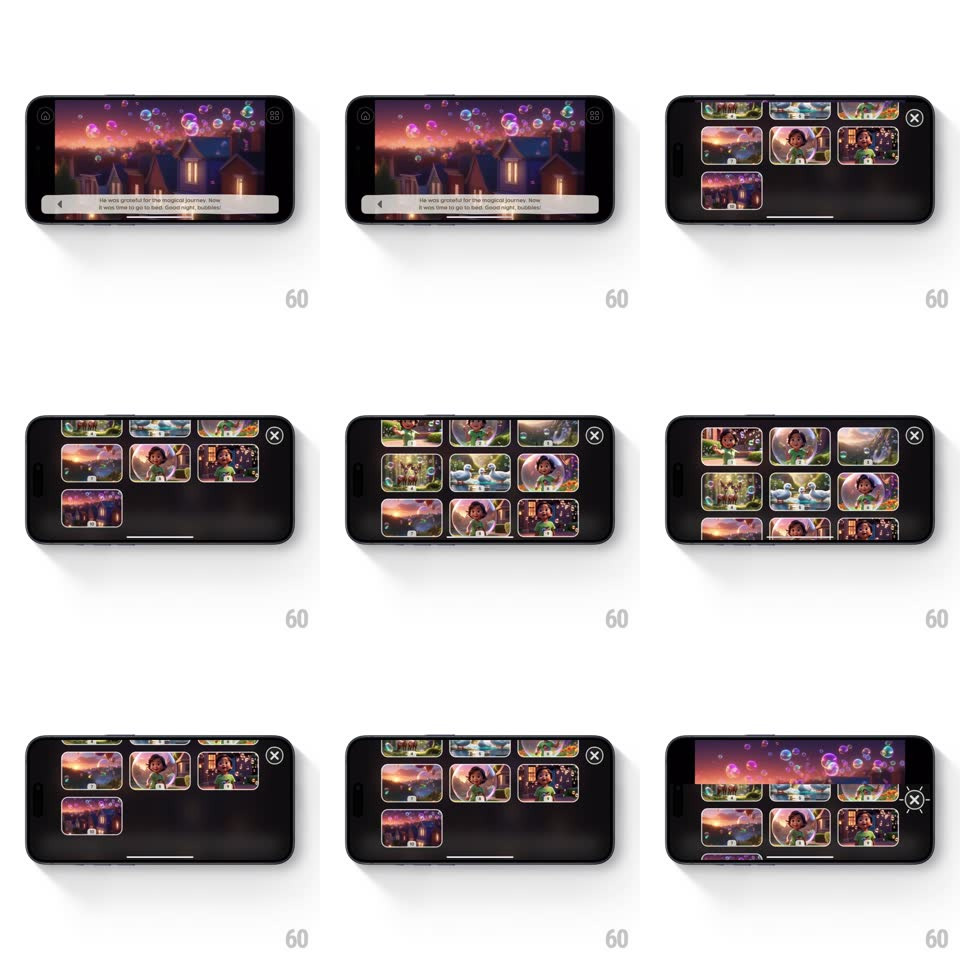

Media
Frame-by-frame

Rebuild this interaction 1:1: Super's story slide picker - from a landscape story player (twilight village scene with bubbles and a caption bar), a dark sheet springs up revealing a scrollable grid of story scene thumbnails, an x to close.

Rebuild this interaction 1:1: Super's story slide picker - from a landscape story player (twilight village scene with bubbles and a caption bar), a dark sheet springs up revealing a scrollable grid of story scene thumbnails, an x to close. ## Integration Integration: stack-agnostic spec - springs given as stiffness/damping, timed motions as duration + curve; map every value to your framework and animation library of choice. ## Scene Landscape story player: full-bleed illustration (village at dusk, floating bubbles), a rounded caption bar at bottom, small page badge top-right. Open state: a dark charcoal sheet covering ~80% of the screen, a 3-column grid of rounded scene thumbnails (each with a tiny lock or number badge), x button top-right, drag indicator. ## Motion spec Pattern: springy grid sheet over a live scene. - Tap the picker affordance: the sheet springs up (spring ~320/22, slight overshoot past its rest, settles ~500ms), the scene behind scaling down 4% and dimming 40% - depth, not dismissal. - Thumbnails cascade in: row by row from the top (scale 0.85 -> 1 + fade, 250ms, 50ms per row) - the grid builds itself. - Scrolling: standard physics; the current scene's thumbnail keeps a soft highlight ring that breathes (opacity 0.6 -> 1, 1.6s). - Tap a thumbnail: it pulses (scale 0.94, 120ms), the sheet slides down (300ms ease-in), and the player crossfades to the chosen scene (400ms) with its caption bar re-sliding up (spring ~360/20). - x or swipe-down: sheet drops with the same spring reversed, the scene re-brightening. ## Calibration - The player stays live behind the sheet (dimmed, scaled) - picking a slide never feels like leaving the story. - 3 columns with generous rounding - thumbnails read as story cards, not a file grid. ## Reduced motion Sheet fades up; grid appears assembled; scene crossfades only. ## Don't miss - Locked scenes show their lock badge in the grid - the picker doubles as a progress map. - The cascade is per-row, not per-cell - a wave, not a sparkle.